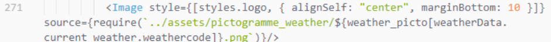

Ce document constitue le cahier des charges du projet.
L'objectif de ce projet est de créer une application mobile permettant aux employés de connaitre les informations météorologiques des chambres afin de pouvoir les réguler dans le but de réduire la consommation d'énergie. La deuxième partie de l'application permet d'équiper chaque chambre d'un dispositif indiquant les données météorologiques de celle-ci
Les outils utilisés pour ce projet sont :
- Jira et Confluence : gestion de projet
- GitHub : centralisation des fichiers de l’application et la gestion des versions
- Visual Paradigm : Modèles de données
- Figma : Outil de maquettage
- Visual Studio Code (éditeur de code): HTML 5/CSS 3/React Native 0.70/JavaScript 13 - ECMA-262/Python 3.11.2
- Environnement local : ordinateur portable sous Windows 11
- Expo Snack : Environnement de test React Native via navigateur
L’application a plusieurs types de clients :
- Les hôtes de chambres, pour lesquels les informations propres à chaque chambre sont affichées (température, vitesse du vent, description météo, humidité).
- L'administrateur de l’établissement pour qui un tableau de bord contient un affichage des informations de chaque chambre
- Les employés de maintenance qui doivent indiquer leurs interventions dans les chambres.
L’accès au tableau de bord et au sous-système d’intervention doit être sécurisé, raison pour laquelle j’ai implémenté un mécanisme de connexion.
J’ai également réalisé l’IHM du composant “tableau de bord” destiné à la partie administrateur de l’hôtel. Ce tableau de bord permettra à l'administrateur d’avoir une vue globale des informations de chacune des chambres.
J’ai aussi pu ajouter une fonctionnalité en React Native qui permet grâce au dictionnaire ‘weather_picto’ d’afficher le pictogramme associé au code météo actuel via une balise React Native <Image> :
